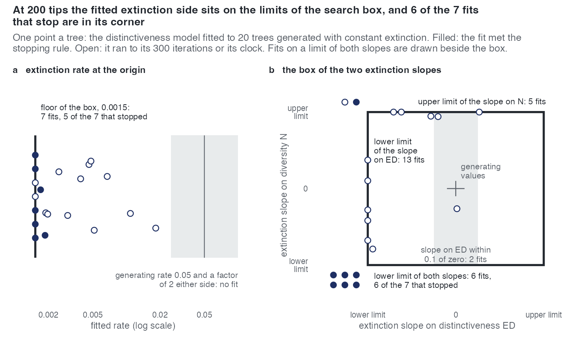

E29 — on fits that finish at 200 tips, is the extinction side recovered?
| Status | complete; the extinction verdict holds; the \(\beta_{ED}\) recovery on finished fits (1.02) is superseded by E46 when it reports (Estimability) |
| Package build | emphasis f30a791 |
| Driver / analysis | sim/E27-conditions.R (--cells n200 --gens ned --models cr,dd,ned --max-iter 300 --clock-scale 2); sim/E29-analysis.R; figure sim/figures-study.R |
| Data | results/E29/trees.csv (20 rows, one per tree), results/E29/limits.csv (40 rows: every E27 cell read the same way), results/E29/ladder.csv (60 rows), results/E29/calibration.csv; macros report/e29-numbers.tex, table report/e29-table.tex |
Question
Every lineage-level fit above 100 tips before E29 had ended on its iteration cap or its clock. E27 put the ED coefficient at 0.91 of its value and the extinction rate at about a thirtieth of its value on those unfinished fits. E29 asks what the budget was hiding: given three times the iterations, do the fits finish, and on the ones that do, does the extinction side (the rate and its slopes, generated at 0.05 and zero) come back?
Design
| setting | value |
|---|---|
| generator | ned (speciation depends on N and ED; extinction constant), E27's 200-tip cell and calibrated parameters (results/E27/design.rds) |
| speciation effect on ED | \(\beta_{ED} = -0.112\) per unit (\(\log 0.65\) per mean ED of 3.84) |
| extinction | constant at \(\mu = 0.05\) (turnover 0.10); extinction slopes zero |
| sampling | complete (\(\rho = 1\)) |
| crown age | 15 |
| trees | 20 (E27's seeds; median 200 tips) |
| fits | ladder cr → dd → ned, exponential link, unconditional likelihood |
| draws / iterations / clock | 300 draws, max_iter 300, a four-hour clock per fit (E27: 100 iterations, two hours) |
| stopping rule | relative change below \(10^{-2}\) over three iterations |
| box | auto_bounds() |
The box, at 200 tips and crown age 15: auto_bounds() lets a slope move the log-rate by 3 over its covariate's scale on the tree, so the extinction slope on ED is limited to \(\pm 0.40\) per unit and the slope on N to \(\pm 0.015\) per lineage; the extinction intercept may fall to \(\log(0.1\,\hat r) - 3\) with \(\hat r = \log(n/2)/T\), a floor of 0.0014 to 0.0017 by tree. A parameter counts as on a limit within 1% of it (0.02 on the log-rate for the intercept).
The trees are not E27's tree for tree. The amendment of 2026-10-06 records that E27 drew its ned trees with the simulator before f30a791, and the same seeds under f30a791 draw other trees (E27's twenty at 200 tips: median 233 tips; E29's: 200). E29 against E27 is two samples of 20 from one generator, not a paired comparison.
Every fit maximises the unconditional likelihood on trees kept only if both crown lineages survive (the convention recorded before E34).
Pre-set rule
- The E19 rule on \(\beta_{ED}\): median fitted/generating in [0.75, 1.25], right sign on ≥ 80%.
- The share of
nedfits that met the stopping rule. - On finished fits: a median extinction rate within a factor of 2 of 0.05 is reported as recovered, and a median extinction slope within 0.1 per unit of zero as recovered; otherwise "the extinction side is not identified at 200 tips even on finished fits".
Results
The budget. 7 of 20 ned fits met the stopping rule (1 of 20 in E27); 12 ran to 300 iterations and 1 to its clock. Median effective sample 247 of 300; one fit below 10 (tree 5, 5.3 draws, ended on the clock at 248 iterations). A three-model ladder took a median 2.1 hours.
The speciation side. \(\hat\beta_{ED}\)/generating: median 0.71 over 20 trees (below 0.75); 1.02 on the 7 finished fits; right sign on 19 of 20. Chosen within 2 AIC: ned on 4, dd on 7, cr on 9 (ned at the minimum on 6).
The extinction side (ned fit, rate at the origin, i.e. at N = 0 and ED = 0):
| quantity | all 20 | the 7 finished |
|---|---|---|
| rate at the origin, median | 0.0019 (26x below 0.05) | 0.0016 (31x below) |
| within a factor of 2 of 0.05 | 0 | 0 |
| rate on the floor of the box | 7 | 5 |
| slope on ED, median | -0.40 (the lower limit) | -0.40 |
| slope on ED within 0.1 of zero | 2 | 0 |
| slope on ED on its lower limit | 13 | 7 |
| slope on N on a limit | 11 (6 lower, 5 upper) | 6 (lower) |
| all three on the lower limit | 5 | 5 |
| at least one extinction parameter on a limit | 17 | — |
The rate the ned fit implies at the tree's present diversity for a lineage of the clade's mean ED is a median 0.01 of 0.05, within a factor of 2 on 1 tree. The dd fit of the same trees implies a median 0.84 of 0.05 at the present diversity (0.042), within a factor of 2 on 6.
Every cell of E27, read the same way (limits.csv): of 300 fits of ned and nk to their own trees (50 to 200 tips, turnover 0.10 to 0.40, \(\rho\) 0.5 to 1), 17 met the stopping rule, 188 have at least one extinction parameter on a limit and 125 the rate on its floor; the median rate at the origin is 0.01 to 0.13 of the generating rate by cell. Generated at zero, the ned extinction slope has a median of -0.39, -0.29 and -0.32 per unit at 50, 100 and 200 tips; the nk slope -0.09 to +0.01 per split. Of 460 dd fits, 340 have a limit, 123 the rate on its floor and 212 the slope on N on its upper limit: in dd the intercept and the slope on N trade.

Conclusion
Not met: the median rate is 26 times below 0.05 and the median slope on ED is on the lower limit of the box, on all fits and on the finished ones, so by the rule the extinction side is not identified at 200 tips even on finished fits. The stopping rule is met where the box holds the M-step: every finished fit has the ED slope on its limit. The extra budget does recover the speciation side on the fits that finish (1.02). What E29 cannot tell apart is whether the box is too tight for a maximum just outside it or the tree does not bound extinction from below; that is E32 (a). The fits are unconditional; E34 checks whether conditioning on survival changes the reading. The "rate at the origin" is the intercept at N = 0 and ED = 0, not the rate of a typical lineage; the rule reads it against 0.05 anyway, and the present-diversity rate is reported beside it.
Related
- E27 — the cells and calibrations E29 reuses; its unfinished fits raised the question.
- E32 — wider box, a real extinction driver, and the exact estimators on these trees.
- E34 — the same trees under the likelihood conditioned on survival.
- E31 — refits E29's
nedtrees inside the full ladder. - E38 — where 200 tips at turnover 0.10 sit on the exact information map.